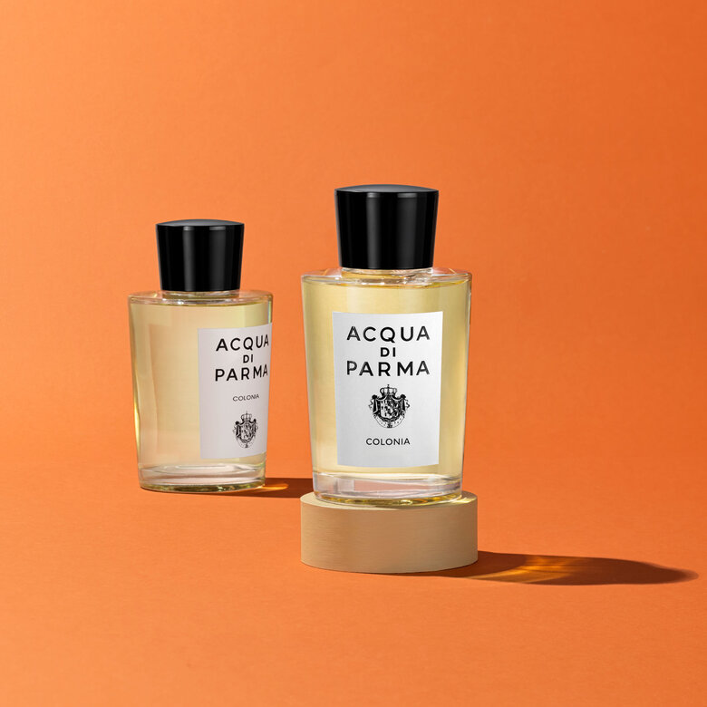
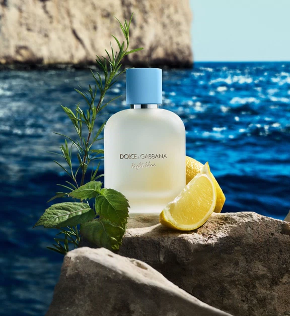

JO MALONE LONDON
라임 바질 앤 만다린Lime Basil & Mandarin
- 대표 노트
- 라임 · 바질 · 만다린
톡 쏘는 라임과 향긋한 바질이 어우러진 조말론의 대표 시트러스예요. 상큼하면서도 허브의 개성이 느껴져요.
Citrus
Citrus
상큼하고 청량한 감귤 향. 시트러스 계열을 대표하는 향수 3종을 소개합니다.
JO MALONE LONDON
톡 쏘는 라임과 향긋한 바질이 어우러진 조말론의 대표 시트러스예요. 상큼하면서도 허브의 개성이 느껴져요.
Citrus

ACQUA DI PARMA
이탈리아를 대표하는 클래식 오 드 코롱이에요. 밝은 감귤 향 뒤로 라벤더와 허브가 이어져 깔끔하고 세련돼요.
Citrus

DOLCE & GABBANA
지중해의 여름 같은 레몬 향에 풋사과의 산뜻함이 더해져요. 시더우드로 깔끔하게 마무리돼요.
Citrus
※ 대표 노트는 브랜드 정보를 간추린 것이며, 제품 리뉴얼이나 버전에 따라 다를 수 있습니다.